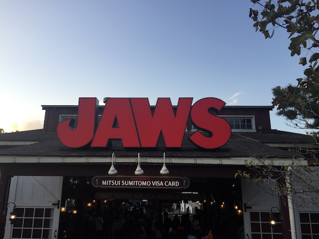

| |
Universal Studios Japan Review

While this may not be a resort like it's Floridian cousin and only be one park, this is surprisingly the best park that Universal has (Well, I'm still missing Singapore and China, but....I think it's a safe bet calling Japan the best one for now). And for good reasons. This park is f*cking awesome! Unquestionably my favorite Universal park (Especially if you count Florida as 2 parks). There is just so much to this park. First off, the roller coaster collection here is fantastic! I don't want to go over this too much now as I have reviews for all the roller coasters down below. But....*drool* FLYING DINOSAUR IS SO F*CKING GOOD!!! Read the review down below to hear me heap praise upon that ride. And Hollywood Dream is a lot of fun too. They also are both a highlights reel of Universal's best, such as having Spiderman and Forbidden Journey and Jurassic Park, as well as keeping some old school classics that are gone at the other parks (Jaws). And everything that the park does seems to be great. The theming at this park is fantastic and you forget that you're in Japan while there. OK, not quite to the same extent as Tokyo Disney Sea. But it's still really well themed. The park really reminds me of what I thought of Universal Orlando back when I first visited that park in 2007 and they made wrong decision after wrong decision. But yeah. This park is awesome. And while it may not get a ton of love in the Western world, people really love it in Japan because this park gets PACKED!!! REALLY FREAKING PACKED!!! But for good reasons. See what makes this park so great and worth visiting when visiting Osaka.
Rollercoasters
There is a link to a review of all the Rollercoasters at the Universal Orlando Resort.
Top Coasters
Flying Dinosaur Review

Very Good Coasters
Hollywood Dream Review

Fun Coasters
Space Fantasy Review

Kiddy Coasters
Flight of the Hippogriff Review

Past Coasters
Snoopys Great Race Review

Flat Rides
Universal Studios Japan essentially has no flat rides. I mean, they technically do. But...they're all kiddy flat rides in the kids sections. That's one downside of the Universal parks, Japan included, is that the flat ride collection has never been really good. But hey. There are so many other things to enjoy in this park.
Dark Rides
All right. Now this is where Universal really shines. Much like Disney, Universal is essentially the only other theme park chain that can reliably have a kickass dark ride selection. And yeah. Universal Studios Japan is no exception to that. And as such, let's look at their best dark. Spiderman. Now while I never did this in Japan (Damn you insane USJ crowds), I have done it's clone in Florida. And man do I love this ride. One of the best dark rides ever! The technology they use on simulators like Spiderman is crazy and it's really amazing that this is a simulator! So much better than any other simulator. Make sure you don't make the mistake I made of not having time for this ride. Cause it truly is an awesome ride! Moving onto their other major dark ride, Forbidden Journey. While not nearly as good as Spiderman, it's still a really freaking good dark ride. Again, I didn't ride this ride here, but I rode it at Universal Studios Hollywood. I mean, anything that uses the robot arm technology has to be good. And the whole thing about saving hogwarts, flying in the quidditch match, and getting attacked by those trees, all that is fun. And finally, this is the only Universal Park where you can still ride Jaws. I know I could've ridden it back when I was in Florida, but I chose not to (Stupid teenage me). Well, at least I can still do it here (One of the few dark rides I actually did ride while here). I know it's not exactly a thrilling ride. You're mainly just going around in a boat. But hey! Any ride where you get attacked by a shark while riding is A-OK in my book. And while Jaws is the only dark ride I actually rode here, there are plenty more 4D Shows. They have Shrek 4D, which I was not a huge fan of, but still fun. There's the despicable minion ride, which was a good simulator. The only problem was that the minions are annoying. Not sure if this is a controversial opinion, but it's true. Also, there's a Sesame Street 4D Simulator here if you're looking for something more for younger kids.

Now only avaliable in Japan. Shame cause this ride is a ton of fun.
Water Rides
Universal Studios Japan only has one water ride. And yeah. You know what it is. It's pretty much a staple of all the Universal Studios at this point. Yep. They have Jurassic Park here. I know it's essentially just a standard shoot the chutes ride, but it's still a ton of fun and has a really great theme. I mean, this is the ride that's themed to Jurassic Park! That movie is f*cking awesome! So of course, the ride based off it would be amazing. OK, Fine. You caught me. I was talking about Flying Dinosaur. But Jurassic Park is still a really good shoot the chutes ride. And to make things better, it's still Jurassic Park. They didn't redo it to make it themed to Jurassic World, which isn't nearly as good (at least the movie isn't nearly as good as the original. Haven't done the ride @ USH yet). Really hope that it stays Jurassic Park here in Japan.
 Dinosaurs make all shoot the chutes better. =)
Dinosaurs make all shoot the chutes better. =)
Dining
All right. The food at Universal Studios Japan is....hard to really say. From what I can tell, it seems to be the same sort of standard food that all the Universal Parks have, which....hey. That's definetly better than what most parks have. The one food that I did get at the park was the food from Hogsmade, which....yeah. It's standard British food. And while that's different, I have to be honest. British Food is far from one of my favorite cuisines. I probably wouldn't have eaten here if not for the fact that I was with other Potterheads who wanted to check out the Wizarding World of Harry Potter. But of course, the Butterbeer is the best part of the Harry Potter foods. I know it's expensive and mainly just Butterscotch Soda. But....that foam. That foam is so f*cking good. Probably the only drink where you actually want more head. The park also has French Cuisine, American Cusine, Italian Cuisine, Japanese Cuisine (well, we are in Japan), Chinese Cuisine, Brazilian Cuisine, and a resteraunt that's solely dedicated to curry (Now this is a place I wish I should've eaten at). Also, there's Universal Citywalk, which has tons of resteraunts, such as Hard Rock Cafe, T.G.I Fridays, and most American of all, McDonalds, which I did because I was rushed and most other stuff was closed. Now Japanese McDonalds is amazing and so much better than regular McDonalds, but it's that way all over Japan. No need to get it here. Yeah, there's some local stuff here as well, but Citywalk might as well be Little America.
 This stuff is amazing.
This stuff is amazing.
Theming and Other Attractions
Here are the reviews of all the other stuff at Universal Studios Japan. For theming, it is really well. The Wizarding World of Harry Potter is really well themed, and of course, the Jurassic Park looks absolutely amazing. Even if you don't like the entire area being draped with a giant B&M Flyer, the theming in the area is just too good. It looks absolutely fantastic. The Snoopys Studios Area is really well done, and honestly, if it wasn't for the Little Mermaid's Lagoon at Tokyo Disney Sea, I'd call it the best kids area ever. And then of course, there's the areas that are themed to New York and Hollywood. Those are pretty good, though lets keep it real. I'm pretty jaded about any lands themed to Hollywood considering where I'm from. I'm trying to get away from home. Not be reminded of it lol. =P But hey, for those who want to see Hollywood, this is a really well themed area to Hollywood. OK, as for other things to do, I didn't really get a chance to explore other things to do due to how insanely busy the park got and how rushed for time I was. But one thing they have that I really wish I got to see was Backdraft. I remember seeing that in Hollywood a long time ago and loving it. So it really bums me out that I had to miss it here in Japan, but hey. At least it's still here in Japan (really hoping that it's still there when I come back. Please keep Backdraft in Japan). I'm sure there's several other shows that are cool, but I just don't have time to go through them all.
Love this show.
In Conclusion
Universal Studios Japan is a fantastic park worth visiting. This park is everything that is great about all of the Universal Parks. If you're strictly a coaster enthusiast and don't care about theming, shows, or any of that good stuff, then Flying Dinosaur alone will put this park on the map. Let alone Hollywood Dream and Space Fantasy. But on top of some really good coasters (BEST B&M FLYER EVER!!!), the park is doing great in all the other departments. They have some of the best dark rides ever, a couple rare rides that you can only ride in Japan now (Jaws), good shows that are only here, and of course, the theming in this park is great. I HIGHLY recommend giving this park a visit if you're in Osaka.
Enthusiast FAQs.
*Are there kiddy coaster restrictions? - Nope. You can ride both Flight of the Hippogrith and Snoopy's Great Race.

Tips
*Get Fastpass. This park gets MOBBED!!!
*If you don't get fastpass, then be prepared to arrive at the park early and leave late.
*Single Rider Lines won't help you nearly as much as you think they will, but they're still worth using.
*The park is zipper-intolerant. But it's not just a Universal thing. Japan is like that in general (at least here, it's done well).
*Do NOT miss Flying Dinosaur.
*Hollywood Dream is better backwards and I highly recommend doing it that way.
*Just letting you know again that this park gets MOBBED!
*Have Fun!
Theme Park Category:
Theme Park
Location
Osaka, Osaka, Japan
Last Day Visited
October 29, 2018
Video
I unfortunetly did not shoot enough video to make a Universal Studios Japan video.
Complete Update List
2018
JAPAN 2018!!! =)
Here's a link to the parks website.
Home
|